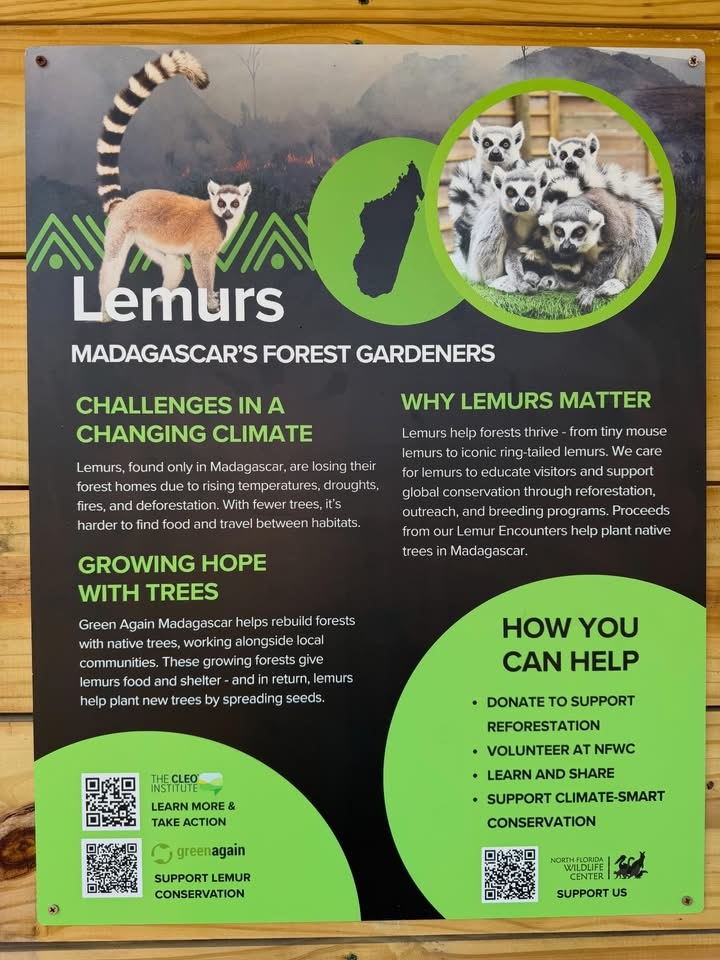
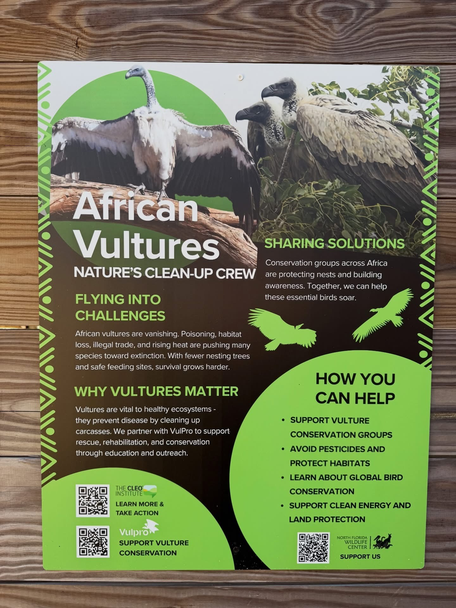
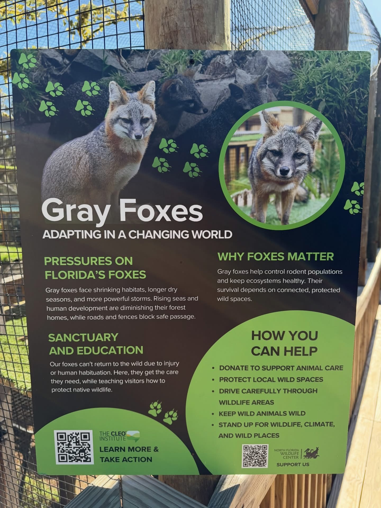
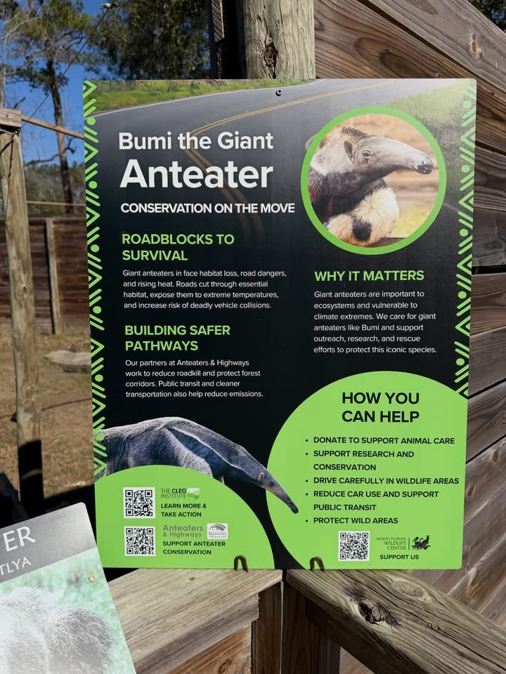

Portfolio
Selected work
A sample of curriculum, education, and interpretive materials developed for environmental organizations and publication.
Published project
Local Waters, Global Impact
A place-based lesson centered on water quality, climate impacts, and community stewardship.
- Students investigate real water samples and analyze data
- Connects climate change to local environmental conditions
- Hands-on testing, modeling, and evidence-based claims
- Standards-aligned unit on environmental systems
Published project
The Air We Breathe
A project-based learning experience connecting air quality, climate change, and environmental justice.
- Students collect real air quality data with portable sensors
- Analyze patterns and identify environmental disparities
- Applies claims-evidence-reasoning (CER) framework
- Connects data to civic action and advocacy writing
Educational Signage
The following educational signs are installed at North Florida Wildlife Center, Lamont, FL
Content and initial concept by Karolyn Burns. Final design in collaboration with the CLEO Institute graphics team.

Lemurs — Madagascar's Forest Gardeners

African Vultures — Nature's Clean-Up Crew

Gray Foxes — Adapting in a Changing World

Bumi the Giant Anteater — Conservation on the Move
×

Additional curriculum and education projects developed in collaboration with partner organizations are available upon request.